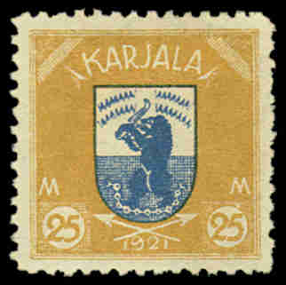

Return To Catalogue - Finland - Russia
Note: on my website many of the
pictures can not be seen! They are of course present in the
catalogue;
contact me if you want to purchase the catalogue.
A territory between Finland and Russia, in 1922 stamps were used during several days in an attempt to join the territory to Finland.


5 p brown 10 p blue 20 p red 25 p brown 40 p lilac 50 p green 75 p yellow 1 M red and brown 2 M green and black 3 M blue and black 5 M lilac and black 10 M brown and black 15 M green and red 20 M red and green 25 M yellow and blue
The values 5 p to 1 M had 20,000 stamps printed of each value, the higher values were printed 15,000 copies each.
Value of the stamps |
|||
vc = very common c = common * = not so common ** = uncommon |
*** = very uncommon R = rare RR = very rare RRR = extremely rare |
||
| Value | Unused | Used | Remarks |
| 5 p to 3 M | ** | ** | |
| 4 M to 20 M | *** | *** | |
| 25 M | R | R | |
Information concerning forgeries:
The bottom of the "J" of "KARJALA" is
pointing towards the left in the genuine stamp, while in the
forgeries it points in the direction of the left bottom corner.
Furthermore the shading on the sword is much less in the forgery.
The eyes are also different (they are clearer in the genuine
stamp). The value inscriptions also differ for some values (I
haven't seen all values of the forgeries). More information about
these forgeries can be found on
http://www.firstissues.org/ficc/main/can_you_tell.shtml. This
forgery might have been made by the Italian stamp forger Imperato (see
http://www.jaysmith.com/Resource/Articles/Karelia_1922_Forgeries_and_Genuine_Stamps.html).
These forgeries exist of all 15 values. Much more information can
also be found at: posthorn.scc-online.org; The
prolific forgeries of Karelia; the author warns that the
"J" identification might not always work and proposes
to check the NNN patterns above the bear instead.
Genuine stamps with forged postmarks also exist.
I've seen these Imperato forgeries with a "UITUIA 12-11
1922" cancel.